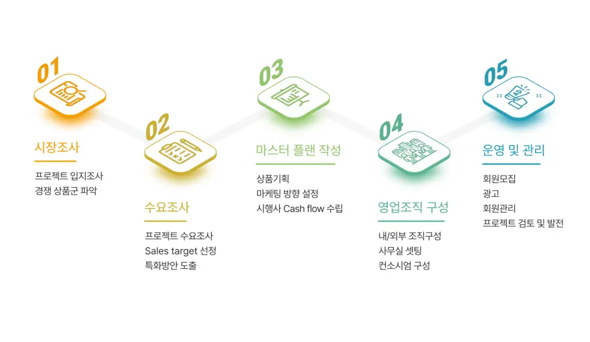

골프·리조트 회원모집 대행 업계에서 CU레저가 다수의 성공 사례를 축적해온 비결은 체계적이고 전문적인 접근 방식에 있습니다. 클라이언트의 프로젝트가 시장에서 안정적으로 자리 잡을 수 있도록, CU레저는 모든 프로젝트를 일관된 5단계 프로세스로 운영합니다.

5단계 프로세스 한눈에
시장조사
- 프로젝트 입지 조사
- 경쟁 상품군 파악
수요조사
- 프로젝트 수요조사
- Sales target 선정
- 특화방안 도출
마스터 플랜 작성
- 상품 기획
- 마케팅 방향 설정
- 시행사 Cash flow 수립
영업조직 구성
- 내·외부 조직 구성
- 사무실 셋팅
- 컨소시엄 구성
운영 및 관리
- 회원모집
- 광고
- 회원관리
- 프로젝트 검토 및 발전
01. 시장조사, 모든 결정의 출발점
모든 프로젝트는 철저한 시장조사로 시작합니다. 프로젝트 입지의 지리적 장점과 접근성, 인프라를 다각도로 분석하여 그 지역에서 가장 유효한 판매 전략을 수립합니다.
동시에 유사 상품군을 꼼꼼히 조사해 차별화 포인트를 찾아냅니다. 같은 권역에 이미 어떤 상품이 있고, 어떤 가격대와 콘셉트로 운영되고 있는지 파악해야 신규 프로젝트의 자리가 보입니다.
02. 수요조사, Sales target의 구체화
시장조사에 이어 수요조사를 통해 목표 고객층의 특성과 요구 사항을 분석합니다. 이 과정에서 막연한 '잠재 고객'이 아니라 실제로 구매 가능한 Sales target이 구체적으로 정의됩니다.
지역, 이용 빈도, 가용 예산, 라이프스타일을 기준으로 세분화한 타깃 정의 위에서 프로젝트 특화방안을 도출합니다. 같은 사업지라도 어떤 타깃을 잡느냐에 따라 상품 구성과 가격 전략이 완전히 달라집니다.
03. 마스터 플랜 작성, 기획·마케팅·자금이 한 문서로
수집된 데이터를 바탕으로 전략적 상품 기획이 시작됩니다. 마케팅 방향을 설정해 프로젝트가 시장에 던질 메시지를 명확히 하고, 시행사와 함께 Cash flow를 수립해 프로젝트의 재무적 안정성을 확보합니다.
마스터 플랜은 단순한 마케팅 계획서가 아닙니다. 상품 구조·시장 메시지·자금 흐름이 한 문서 안에서 정합성을 갖춰야, 분양 개시 이후에도 시행사와 분양대행사가 같은 그림을 보고 움직일 수 있습니다.
04. 영업조직 구성, 실행할 사람과 체계
아무리 좋은 기획도 실행할 조직이 없으면 무용지물입니다. CU레저는 숙련된 내부 팀과 지역별 외부 파트너 네트워크를 함께 구성해 프로젝트를 지원합니다.
현장 사무실 셋팅, 그리고 필요한 경우 다양한 파트너사와의 컨소시엄을 통해 협력 체계를 만듭니다. 한 회사가 모든 일을 다 해야 한다는 발상이 아니라, 각자의 강점을 모아 시너지를 극대화하는 방식입니다.
05. 운영 및 관리, 분양 이후가 본 게임
마지막 단계는 체계적인 운영과 관리입니다. 회원모집과 광고, 회원관리, 프로젝트 검토 및 발전이 이 단계에 포함됩니다.
분양은 끝이 아니라 시작입니다. 모집된 회원을 철저히 관리하고, 운영 과정에서 발생하는 데이터를 지속적으로 검토해 장기적인 발전 방향을 시행사와 함께 제시합니다. 이 단계가 부실하면 분양 직후엔 멀쩡해 보여도 1~2년 뒤 회원 이탈과 가치 하락이 시작됩니다.
이 프로세스를 거쳐 시장에 안착한 프로젝트들
아래는 CU레저의 5단계 프로세스를 통해 회원권 분양·모집을 성공적으로 진행한 주요 프로젝트입니다.
CU레저와 함께하는 성공
CU레저의 전문성과 노하우는 단순한 분양 대행을 넘어, 고객사의 사업 전체 성공을 함께 만드는 데 있습니다. 체계적인 전략 수립 능력, 철저한 시장 분석, 차별화된 마케팅 기획, 그리고 분양 이후의 회원 관리까지. 이미 다수의 프로젝트를 통해 검증된 5단계 프로세스입니다.
회원권 분양·모집을 검토 중이시거나, 인허가 단계부터 함께 호흡할 파트너를 찾고 계신다면 (주)씨유레저로 문의 가능합니다.